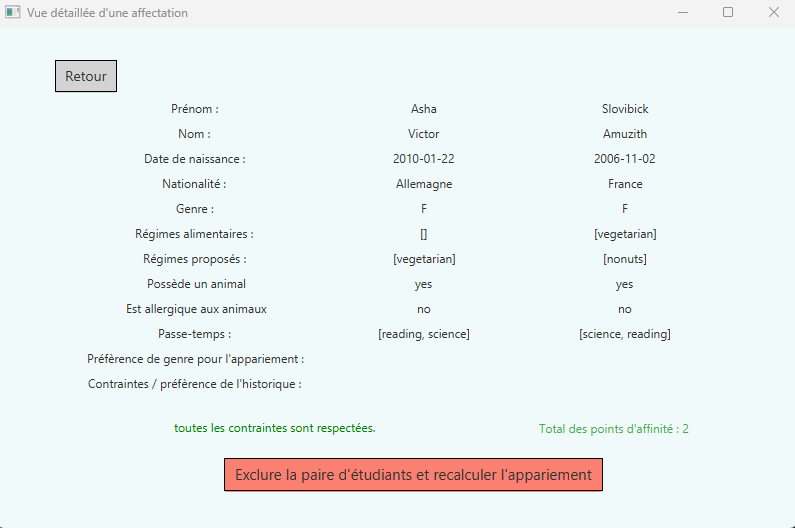
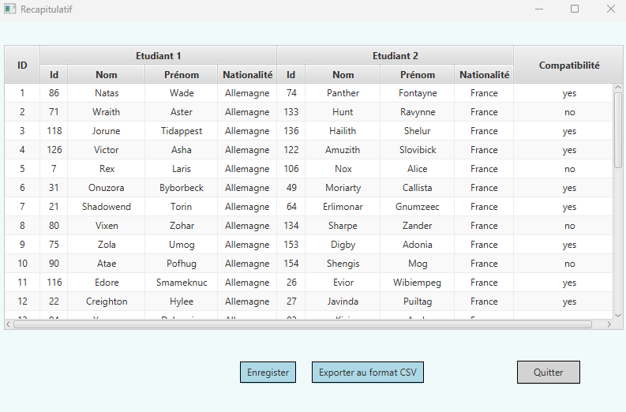
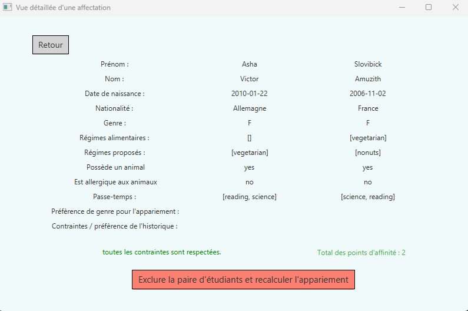
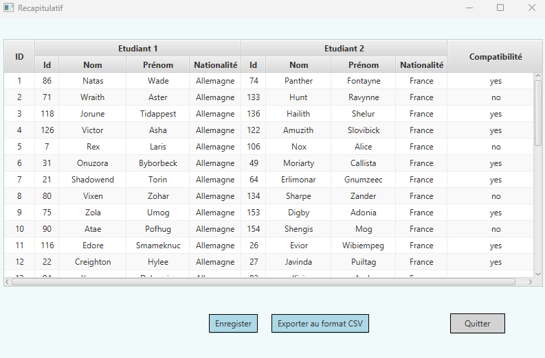

Java
Java FX
Arhitecture MVC
Java
Java FX
Arhitecture MVC
Ce projet est un jeu-vidéo 2d au tour par tour développé en Java / JavaFx. Chaque joueur incarne un monstre devant s’échapper d’un labyrinthe ou un chasseur devant trouver la position du monstre, jouant leurs coups sur la carte à la souris. Une partie peut se dérouler également avec un joueur avec le rôle de son choix face à l’ordinateur. L’application adopte une architecture MVC constituée d’un modèle et d’une vue pour chaque joueur. Divers algorithmes sont abordés dans l’application, que ce soit pour la génération du terrain paramétrable ou pour les stratégies artificielles des deux rôles.
Java
Java FX
 



Le but de projet était de développer un gestionnaire de voyages scolaires en Java / JavaFx destiné aux organisateurs. Le principe de l’application est de répartir de manière optimisée des élèves invités chez des élèves hôtes d’un autre pays. Pour cela, les informations de chaque élève peuvent être saisies via un formulaire ou être importer automatiquement via un fichier CSV. L’utilisateur lance ensuite un appariement automatique entre deux listes d’élèves s'appuyant un graphe, cet appariement prend en compte toutes les contraintes (allergies, régime alimentaire, …) et toutes les préférences (âge, centre d’intérêt, …) de chaque élève ainsi que des éventuels impératifs de l’utilisateur. Les résultats sont visualisables en détails dans l’application et peuvent être ensuite sauvegardés et exportés au format CSV.
HTML/CSS
Javascript
Gant

Ce projet a consisté à développer un Escape Game virtuel en équipe en s'appuyant sur un diagramme de Gant et des réunions d'équipe hebdomadaires. Nous avons pu conceptualiser des énigmes variées ainsi que de développer un scénario et un univers captivant que nous avons implémentés entièrement en HTML/CSS/Javascript. Le jeu est destiné a des étudiant en informatique de première année, il simule un Shell Linux dans lequel le joueur doit recolter des informations et modifier des données en Bash durant les énigmes.
PostgreSQL
Scripts SQL
MCD
L’objectif de ce projet etait de construire une base de données, référençant tous les résultats de tous les participants de tous les Jeux Olympiques de 1920 à 2016. Commençant avec des données brut, nous les avons normalisées importées grâce a des scripts SQL dans une base de données que nous avons conceptualisée avec un Modèle Conceptuel de Données puis implémentée sur PostgreSQL. Nous avon ensuite pu exploiter la base de données afin de réaliser une étude statistique en effectuant diverses requêtes spécifiques.